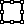

<div class="btn btn-default share">
  Share
  <span class="glyphicon glyphicon-share-alt"></span>
</div>
<div id="tes1" style="position:absolute;bottom:15%;width:500px;margin:0px auto;left:50%;margin-left: -250px;text-align:center;display:none;z-index:5;">
  <div class="alert alert-danger alert-dismissible fade in" role="alert">
    <button type="button" class="close" data-dismiss="alert" aria-label="Close"><span aria-hidden="true">×</span></button>
    You have limited actions for this board. 
  </div>
</div>
<div class="test1" style="width:200px;height:200px;overflow:scroll;height:100%;margin-top:-80px;width:100%;">
  <canvas id='c'  class="whiteboard"></canvas>
</div>
<div class="drawContainer">
  <button class="btn btn-default draw" ng-click="changeMode('draw')">
    <span class="glyphicon glyphicon-pencil"></span>
  </button>
  <button class="btn btn-default pan" ng-click="changeMode('pan')">
    <span class="glyphicon glyphicon-hand-up"></span>
  </button>
  <button rel="select mode" title="pan" class="btn btn-default move" ng-click="changeMode('move')">
    <span class="glyphicon glyphicon-move"></span>
  </button>
  </br>
  <button rel="tooltip" title="center selected obj" class="btn btn-default" ng-click="centerObj()">
    <span class="glyphicon glyphicon-sound-stereo"></span>
  </button>
  <button class="btn btn-default" ng-click="centerFOV()">
    <span class="glyphicon glyphicon-fullscreen"></span>
  </button>
  </br>
  </br>
  <label for="drawing-color">Drawing color: </label>
  <input type="color" ng-model="color" id="drawing-color" style="float:right;"/>
  </br>
  </br>
  <label for="shape-stroke">Drawing Stroke Width</label>
  <input ng-model="drawingStrokeWidth" type="range" min="1" max="10" value="1" id="shape-stroke">
  {{strokeWidth || 1}}

  </br>
  </br>
  <strong>
    Shapes
  </strong>
  </br>
  <button ng-click="canvasActions('rect',addShape)" class="btn btn-default">
    
  </button>
  <button ng-click="canvasActions('triangle', addShape)" class="btn btn-default">
    <div id="triangle"></div>
  </button>
  <button ng-click="canvasActions('circle', addShape)" class="btn btn-default">
    
  </button>
  </br>
  </br>
  <label for="shape-stroke">Stroke Width</label>
  </br>
  <input ng-model="strokeWidth" type="range" min="1" max="10" value="1" id="shape-stroke">
  {{strokeWidth || 1}}

  </br>
  </br>
  <label for="shape-stroke-color">Stroke Color: </label>
  <input ng-model="strokeColor" type="color" id="shape-stroke-color" style="float:right;">

  </br>
  </br>
  <label for="shape-stroke-color">Fill Color: </label>
  <input ng-model="fillColor" type="color" id="shape-stroke-color" style="float:right;">
  </br>
  </br>
  <button class="btn btn-default" ng-click="canvasActions(null, clearCanvas)">Clear canvas</button>
</div>
